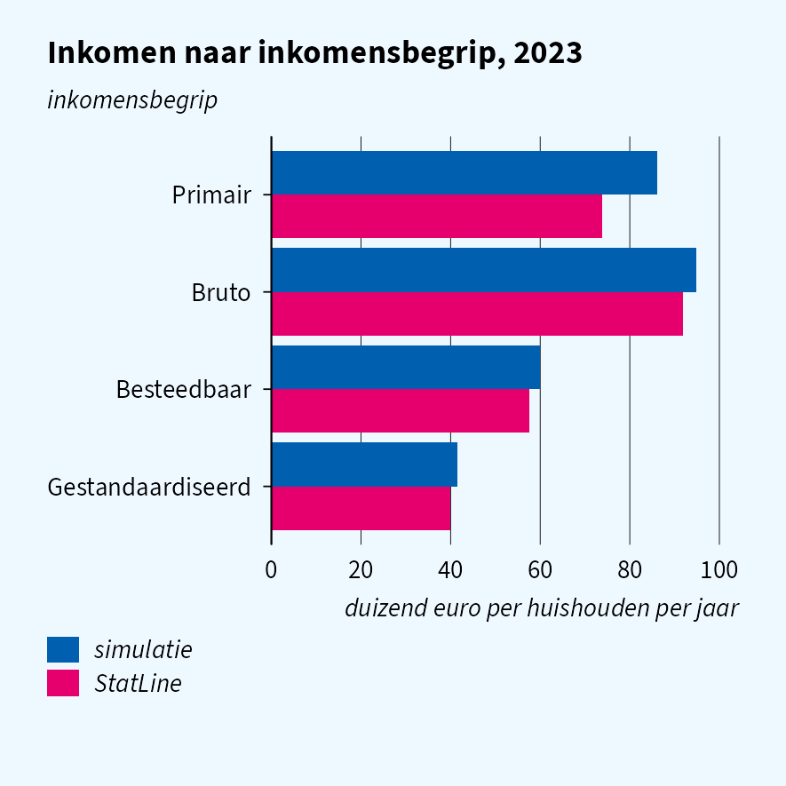
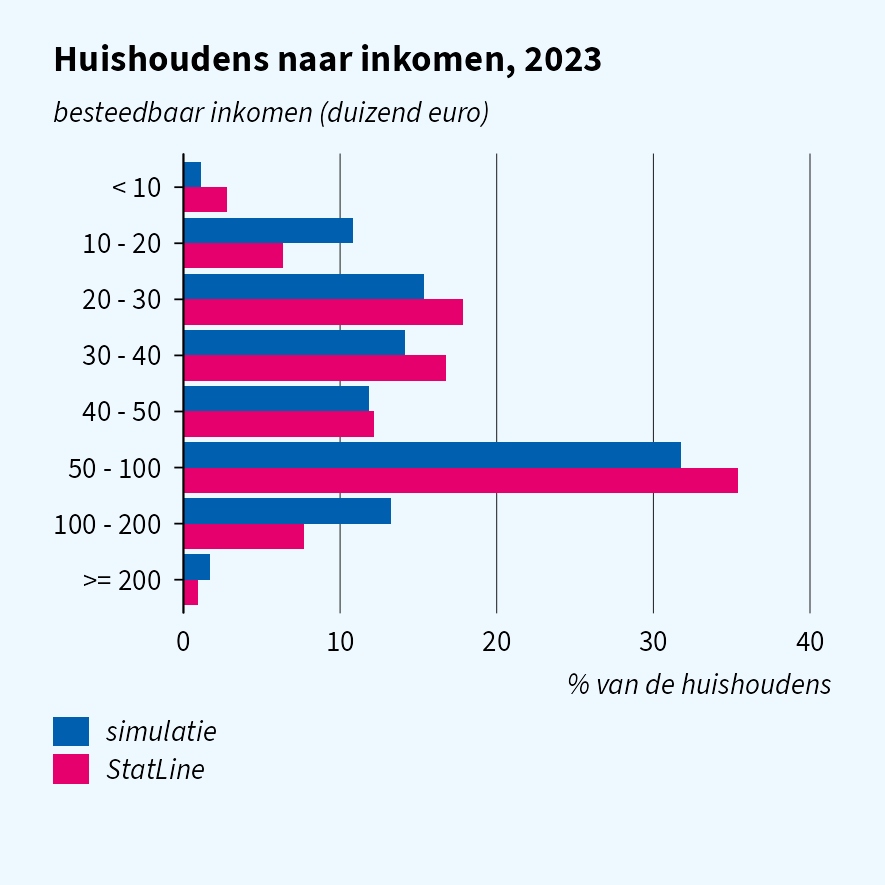
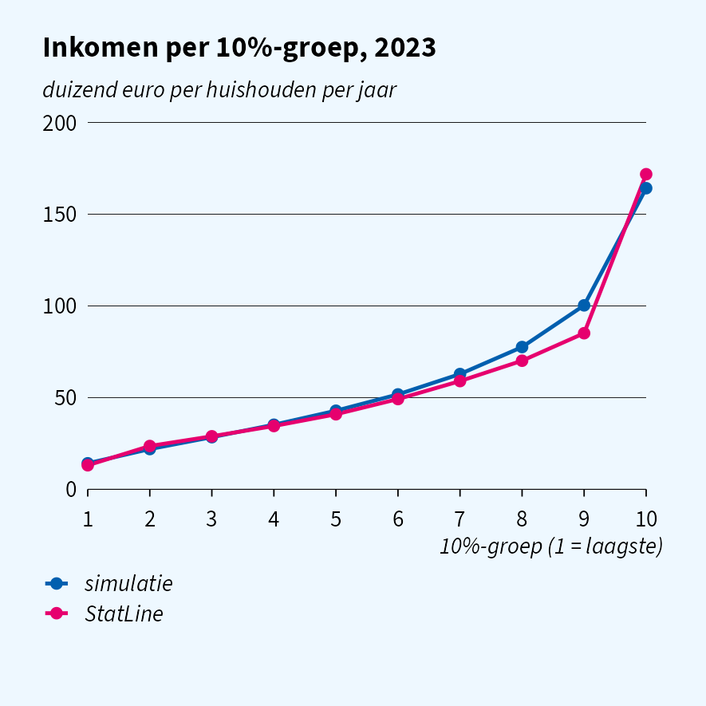
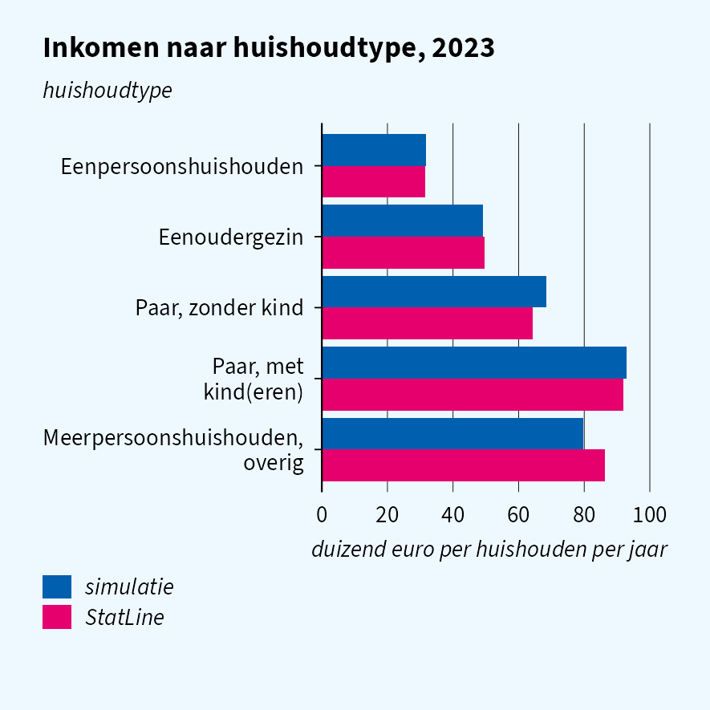

How unequal is household disposable income in the Netherlands, and how does it differ between household types?
This vignette runs that question on simulated INHATAB
(household income) linked to woonbase household types, and compares the
answers with StatLine 83932NED, the published aggregate of the same
register. Part of a series with vignette("quality-cars")
and vignette("quality-energy").
At a glance
| Moment | Matches StatLine? | Safe for research? |
|---|---|---|
| Mean and median income | yes | yes |
| Income by household type | yes | yes |
| Distribution over income classes | close; tails too thin | yes, except the tails |
| Decile means (inequality) | close up to decile 8; top too low | with care at the top |
| Percentile columns | yes | yes |
| Gross and standardised income | yes | yes |
| Primary income | too high | no |
| Persons add up to households | no | no |
Household income is drawn per household type from the mean and median
of 83932NED; woonbase (BESTINKH1JAN) and
INHATAB hold the same value per household. The class
distribution and decile means are not calibrated, so they are an
out-of-sample check.
Simulated data
sim_reset()
woonbase_init(year = 2023, n = 50000L, seed = 42L)
sim_init("inhatab", year = 2023, seed = 43L)
sim_init("inpatab", year = 2023, seed = 44L)
pers <- as.data.table(read_sav("WoonbasePopulatiePersonen2023V1",
col_select = c(RINPERSOON, HUISHOUDNR1Jan)))
hh <- as.data.table(read_sav("WoonbasePopulatieHuishoudens2023V1",
col_select = c(HUISHOUDNR1Jan, TYPHH1Jan)))
inpa <- as.data.table(read_sav("INPA2023TABV1",
col_select = c(RINPERSOON, RINPERSOONHKW, INPPERSBESTINK)))
inha <- as.data.table(read_sav("INHA2023TABV1"))
# INHATAB is keyed on RINPERSOONHKW; INPATAB links it to persons, woonbase
# links persons to households
inpa[pers, on = "RINPERSOON", HUISHOUDNR1Jan := i.HUISHOUDNR1Jan]
inha[unique(inpa, by = "RINPERSOONHKW"), on = "RINPERSOONHKW",
HUISHOUDNR1Jan := i.HUISHOUDNR1Jan]
hh[inha, on = "HUISHOUDNR1Jan", `:=`(
inkomen = as.numeric(i.INHBESTINKH), p100 = as.numeric(i.INHP100HBEST),
primair = as.numeric(i.INHPRIMINKH), bruto = as.numeric(i.INHBRUTINKH),
gestand = as.numeric(i.INHGESTINKH))]
# StatLine covers private households only
hh <- hh[!is.na(inkomen) & as_factor(TYPHH1Jan) != "Institutioneel huishouden"]Level and income concepts
| simulatie | StatLine | |
|---|---|---|
| Mean disposable income | 59,900 | 57,600 |
| Median disposable income | 47,100 | 44,700 |

Gross and standardised income follow disposable income closely. Primary income comes out too high: it is far more skewed (pensioners have little of it) than a single ratio per household type can capture.
Distribution and inequality
sim_dec <- hh[order(inkomen), .(deciel = ceiling(seq_len(.N) / .N * 10), inkomen)][
, .(gemiddeld = mean(inkomen), bron = "simulatie"), by = deciel]

The bulk of the distribution matches. The tails are too thin: hardly any household falls below 10,000 euro (self-employed with losses, students), and the top decile averages 164 thousand euro against 172 thousand in reality, so inequality measures that weigh the very top come out too low.
INHP100HBEST is the rank of the household income, as on
the real file (rank correlation 1.000), so grouping on it directly is
equivalent to computing the ranks yourself.
Household type
hh[, type := fcase(
TYPHH1Jan %in% 1, "Eenpersoonshuishouden",
TYPHH1Jan %in% 6, "Eenoudergezin",
TYPHH1Jan %in% 2:3, "Paar, zonder kind",
TYPHH1Jan %in% 4:5, "Paar, met kind(eren)",
TYPHH1Jan %in% 7, "Meerpersoonshuishouden, overig")]
sim_type <- hh[!is.na(type), .(gemiddeld = mean(inkomen), bron = "simulatie"), by = type]
Couples with children have about three times the income of single-person households, in the simulation as in reality.
Persons and households
pers_sum <- inpa[, .(som_personen = sum(as.numeric(INPPERSBESTINK))), by = RINPERSOONHKW]
pers_sum[inha, on = "RINPERSOONHKW", huishouden := as.numeric(i.INHBESTINKH)]
pers_sum[, cor(som_personen, huishouden)]
#> [1] 0.1828951Personal incomes in INPATAB are drawn independently of
the household, so they do not add up to the household income. Analyses
that split household income over its members cannot be checked on
simulated data yet.